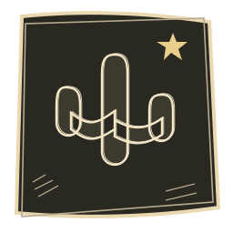

Veyra · special sketch theme 01Margin Notes
A little rough. A lot of rhythm.
Graphite paper, ivory pencil and deliberately imperfect little music tools.
Beta 0.1.9 · theme engine code 30 
background
#24231Fsurface
#2B2A25raised
#3D3A31accent
#E8CD8BaccentContainer
#504633text
#FFF5DFmuted
#DFD2B6outline
#A09477secondary
#AEC6B5
01 / Every mapped asset
All 19 theme roles are shown below. Home and Studio intentionally share one background file. Icons have transparent backgrounds; native Veyra tints them to the active palette.
Home & deep-screen background
header → artwork/preview.webpTheme Studio thumbnail
preview → artwork/preview.webpPlayer background
player → artwork/player.webpIn-app Veyra brand mark
brandIcon → artwork/brand.pngLittle notes.
Big feelings.0123456789 · Veyra
Patrick Hand · headings
headingFont → fonts/PatrickHand.ttfLittle notes.
Big feelings.0123456789 · Veyra
Manrope · body text
bodyFont → fonts/Manrope.ttfHome
nav_home → icons/nav_home.pngSearch
nav_search → icons/nav_search.pngExplore
nav_explore → icons/nav_explore.pngLibrary
nav_library → icons/nav_library.pngPlay
play → icons/play.pngPause
pause → icons/pause.pngPrevious
previous → icons/previous.pngNext
next → icons/next.pngQueue
queue → icons/queue.pngLyrics
lyrics → icons/lyrics.pngSettings
settings → icons/settings.pngBack
back → icons/back.pngDownload
download → icons/download.png02 / Component & motion preview
Interactive design study using the actual pack assets. The Android theme also has uneven Material shapes, pencil-hatched progress, player-button tilt and page slides. This browser study is not a device screenshot.
Tonight, between the lines.
A new page. Same favourite song.
Finite 140 ms button tilt / 240 ms page motion. Animation-off and subtle settings are respected in the app; this study respects system reduced motion.